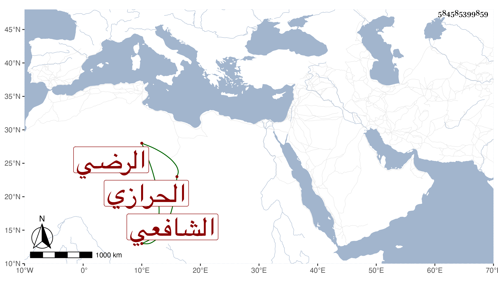

0902Sakhawi.DawLamic.ITO20230111-ara1.EIS1600.584585399859
Biography ID: 584585399859
29
أبو بكر بن إبرهيم بن علي بن محمد بن أحمد بن إبرهيم بن زاك الرضي اليعلائي نسبا الحرازي الشافعي ويسمى عبد الله . حفظ القرآن والشاطبيتين وغيرها وتدرب بأبيه في ذلك ثم ارتحل بعد موته لتعز فتلا للسبع بل وللعشر على الموافق أبي الحسن على بن محمد بن عمر الشرعبي الشافعي الماضي واشتغل في الفقه والحديث والتفسير على الفقيه عمر بن محمد الجبني وهو الآن سنة سبع وتسعين وثمانمائة حي جاز الكهولة متصد للقراات انتفع به فيها وممن قرأ عليه الفقيه علي بن محمد بن أحمد السرجي الماضي .
